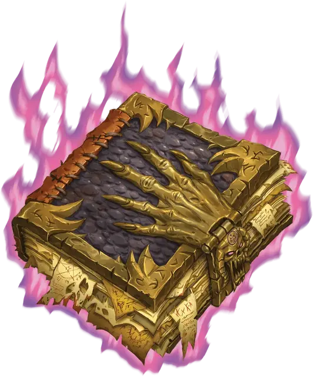

Демономикон Иггвилв
Demonomicon of Iggwilv
Чудесный предмет, артефакт (требуется настройка)

Обширный трактат, документирующий бесконечные слои бездны и её обитателей, «Демономикон Иггвилв» — самый подробный и богохульный том демонологии во всей мультивселенной. В книге рассказывается как о древнейших, так и о самых современных ругательствах Бездны и демонов. Демоны пытались подвергнуть текст цензуре, и хотя отдельные разделы были вырваны из корешка книги, общие главы остались и даже содержат демонические тайны. А ведь книга содержит не просто богохульства. Между строчек текста бурлит тайный кусочек самой Бездны, поддерживающий книгу в актуальном состоянии независимо от того, сколько страниц удалено, и книга жаждет быть чем-то большим, чем просто справочным материалом.
Случайные свойства. Этот артефакт обладает следующими случайными свойствами, которые вы можете определить, совершив бросок по таблицам в разделе «Артефакты» «Руководства Мастера»:
- 2 малых положительных свойства
- 1 малое отрицательное свойство
- 1 основное отрицательное свойство
Заклинания. Книга имеет 8 зарядов. Она ежедневно восстанавливает 1к8 зарядов на рассвете. Держа книгу, вы можете действием наложить жуткий смех Таши [Tasha’s hideous laughter] или, израсходовав 1 или более зарядов, наложить одно из следующих заклинаний (Сл спасброска 20): волшебный сосуд [magic jar] (3 заряда), магический круг [magic circle] (1 заряд), планарные узы [planar binding] (2 заряда), планарный союзник [planar ally] (3 заряда), призыв духа исчадия [summon fiend] (3 заряда; заклинание находится в этой книге), уход в иной мир [plane shift] (только на слой Бездны; 3 заряда).
Справочник Бездны. Вы можете заглядывать в Демономикон всякий раз, когда совершаете проверку Интеллекта, чтобы узнать информацию о демонах, или проверку Мудрости (Выживание), связанную с Бездной. Когда вы делаете это, вы можете добавить к проверке удвоенный бонус мастерства.
Бичевание исчадий. Ваша магия причиняет боль исчадиям. Пока вы несёте книгу, если вы совершаете бросок урона заклинанием против исчадия, вы причиняете максимальный урон вместо броска.
Западня. Пока вы несёте книгу, всякий раз, когда вы накладываете заклинание магический круг [magic circle], выбирая только исчадий, или заклинание планарные узы [planar binding], нацеленное на исчадие, заклинание накладывается на 9-м уровне независимо от используемой ячейки заклинания. Кроме того, исчадие совершает спасбросок от этих заклинаний с помехой.
Сдерживание. Первые 10 страниц Демономикона пусты. Действием, держа книгу, вы можете нацелиться на видимое вами исчадие, пойманное внутри заклинания магический круг [magic circle]. Исчадие должно преуспеть в спасброске Харизмы Сл 20, совершая его с помехой, иначе окажется в ловушке на одной из пустых страниц Демономикона в виде подробного описания, общеизвестного имени и перечисления пороков пойманного существа. Это действие не может быть совершено вновь до следующего рассвета.
Когда вы заканчиваете продолжительный отдых, и если вы и Демономикон находитесь на одном плане существования, пойманное в ловушку существо с самым высоким показателем опасности может попытаться овладеть вами. Вы должны совершить спасбросок Харизмы Сл 20. В случае провала существо овладевает вами и управляет, как марионеткой. Овладевшее существо может освободить вас действием, появившись в ближайшем свободном пространстве. При успешном спасброске исчадие не может пытаться овладеть вами снова в течение 7 дней.
Когда том обнаруживается, он уже имеет 1к4 исчадий, занимающих его страницы, как правило, различных демонов.
Уничтожение Демономикона. Чтобы уничтожить книгу, шесть разных демонических владык должны вырвать по шесть страниц книги. Если это происходит, страницы появляются снова через 24 часа. Прежде чем это время пройдёт, любой, кто откроет оставшийся переплёт книги, будет перенесён в зарождающийся слой Бездны, скрытый внутри книги. В самом сердце этого смертоносного, полуразумного царства лежит давно потерянный артефакт, Посох Фраз-Урб’луу [Fraz-Urb’luu Staff]. Если посох вынести из карманного плана, то книга превратится в обычную и совершенно устаревшую копию Тома Зикса [Tome of Zyx], работы послужившей основой для Демономикона. Как только кто-то выносит посох, демонический повелитель Фраз-Урб’луу [Fraz-Urb’Luu] сразу же узнаёт об этом.